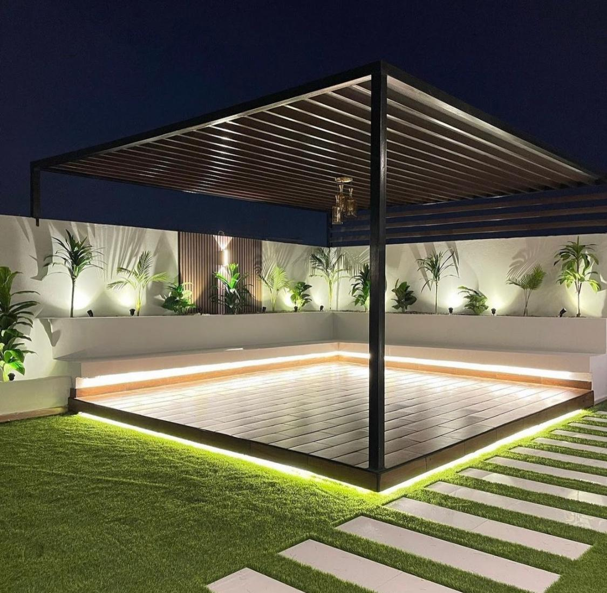
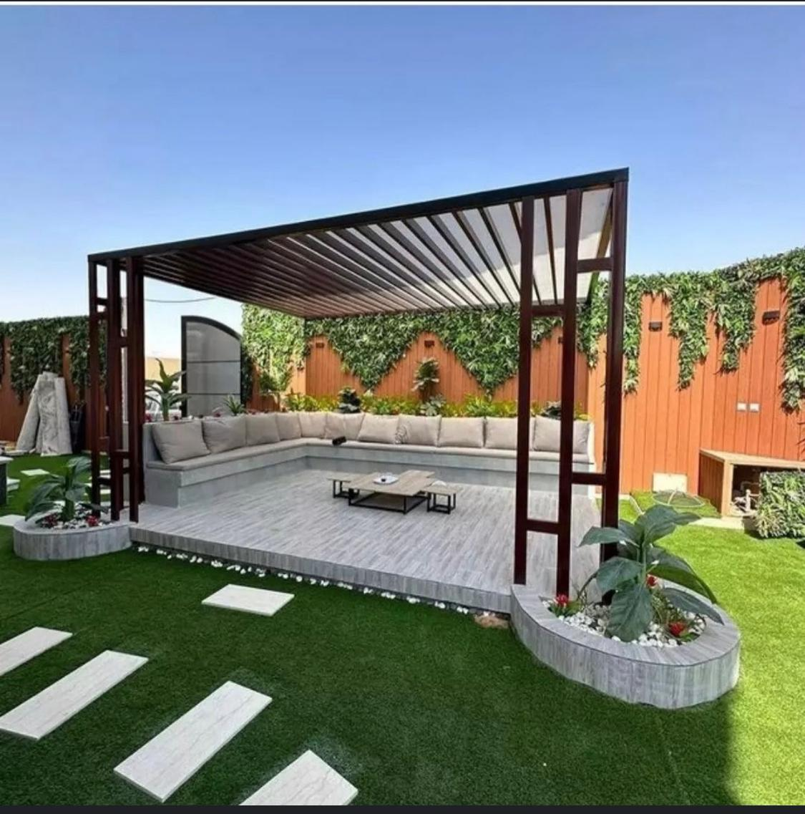
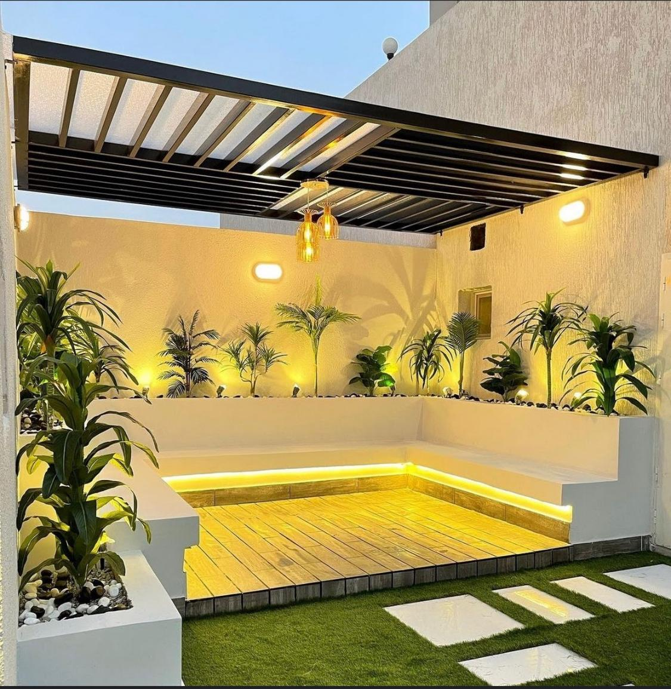
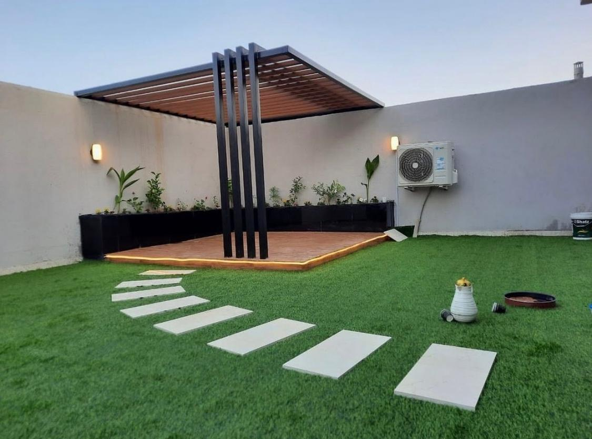
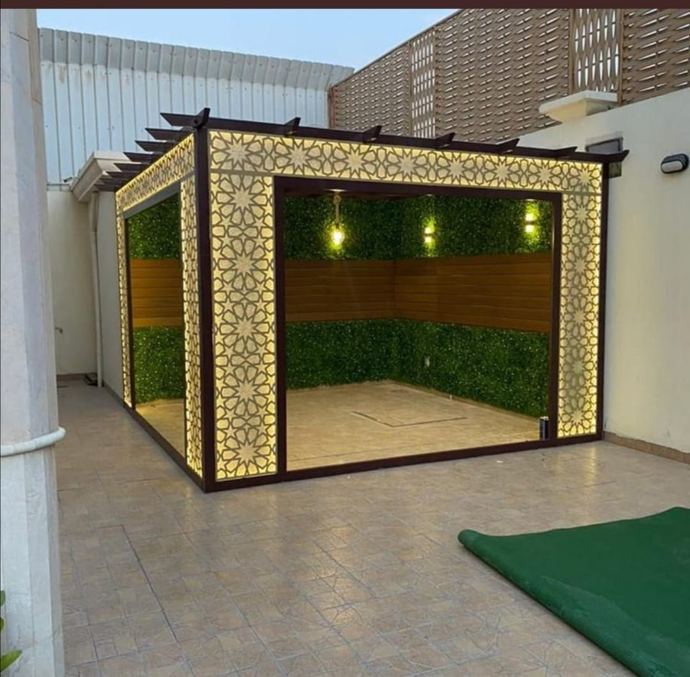
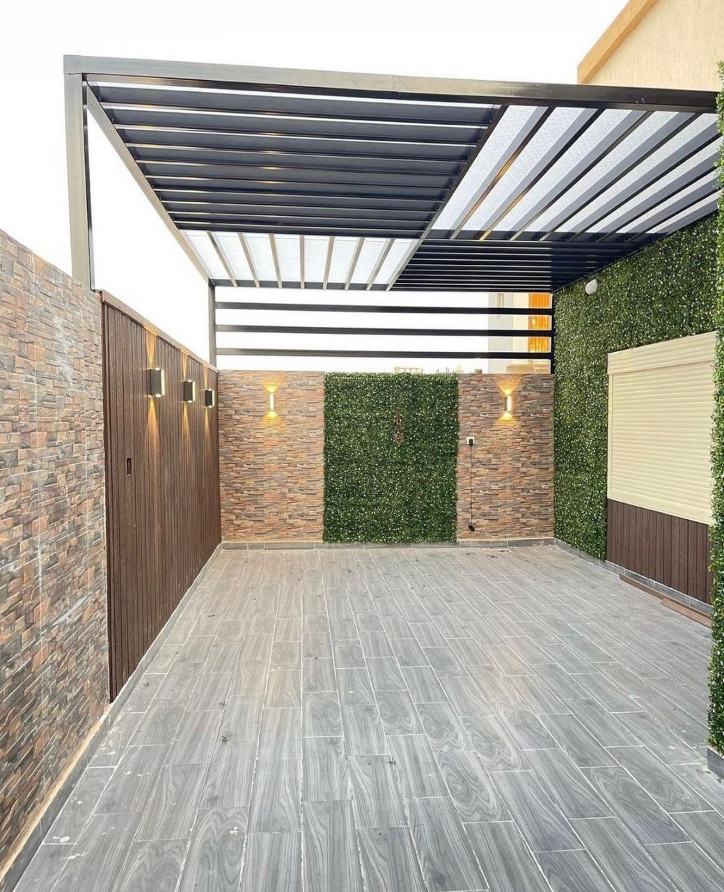
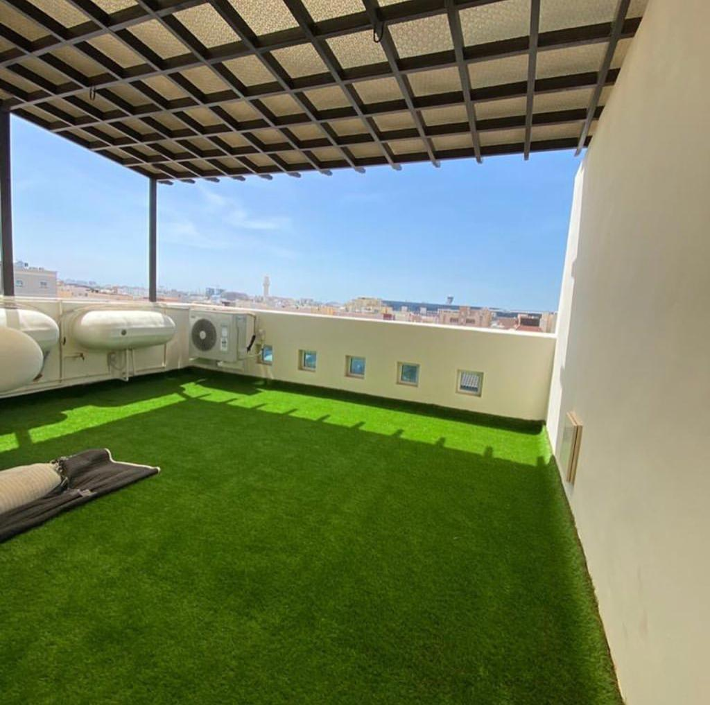

برجولات حدائق
تكوينات للمساحات الخضراء والجلسات الخارجية.
تكوينات للمساحات الخضراء والجلسات الخارجية.
حلول للمداخل والأفنية والمساحات السكنية.
تحديد الطول والعرض والارتفاع وفق المساحة المتاحة.
تنسيق التصنيع والتثبيت بعد مراجعة الموقع والتفاصيل.
خطوات العمل
تواصل مباشر وخطوات واضحة دون افتراض تفاصيل لم تتم معاينتها.
أرسل وصف العمل والصور والمقاسات المتوفرة.
نحدد الحاجة للمعاينة ونراجع المقاسات والتصميم والخامة.
يتم التنفيذ والتركيب وفق التفاصيل المتفق عليها.
نماذج وتصاميم
نماذج بصرية توضح أنواعًا من الأعمال والتصاميم، دون نسبتها إلى مشروع عميل محدد.








قبل طلب الخدمة
إجابات مرتبطة بهذه الخدمة.
نعم، تتم مراجعة أبعاد الموقع والاستخدام المطلوب قبل اعتماد المقاسات.
يمكن تنفيذها للمساحات المنزلية والحدائق وفق طبيعة الموقع.
أرسل صور المساحة وأبعادها التقريبية ووضح مقدار التظليل أو الخصوصية المطلوبة.
تؤثر المساحة والتصميم والخامة والتشطيب وطبيعة التثبيت وظروف الموقع.
ABU JASSAR
أرسل صور الموقع والمقاسات المتوفرة لنتعرف على طلبك.